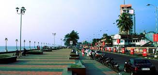
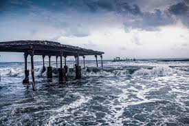
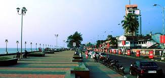
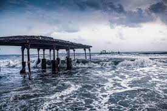
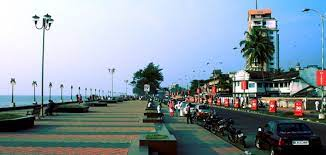
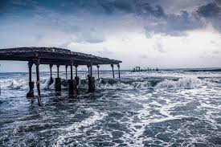
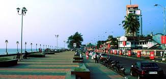
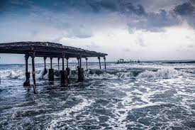

 



Kozhikode, also known as Calicut, has a rich history as a prominent trading port in ancient times. It played a crucial role in the spice trade and is known for its historical significance.
Kozhikode has a vibrant culture with a blend of different traditions. It is famous for its Mappila cuisine and folk art forms like Oppana and Kolkali.
Kozhikode is home to beautiful beaches, including Kappad Beach and Beypore Beach, which offer serene coastal views and opportunities for relaxation.
Kozhikode is famous for its unique cuisine. Try local specialties like Biryani, Sadya, and delectable sweets such as Kozhikodan Halwa.